Personagens licenciados
Estampas de cabedal de tênis infantil com personagens licenciados. Trabalhei direto com estilistas das grandes redes e com escritórios de licenciamento, seguindo o guia de cada marca e mostrando mockups antes de produzir.
- Período
- 2017 a 2023
- O que fiz
- Criação, adaptação ao modelo e à grade, direção de arte
- Onde
- EKOPrint, Nova Serrana
Marvel
Homem-Aranha, Capitão América, Homem de Ferro, Hulk e outros.
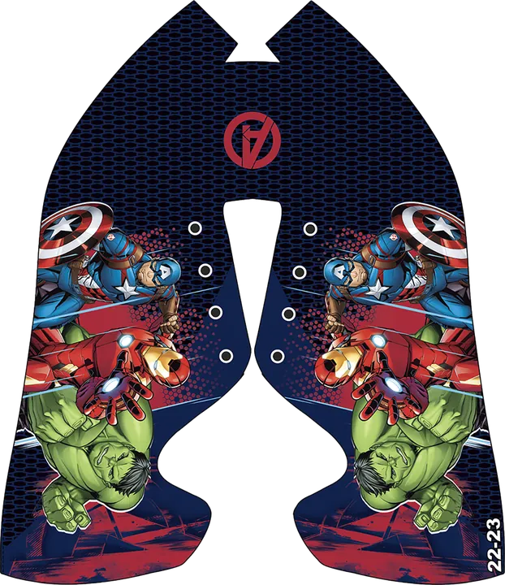
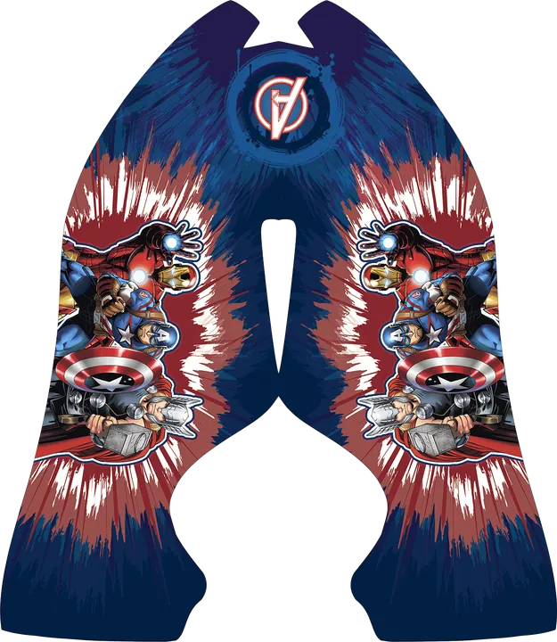
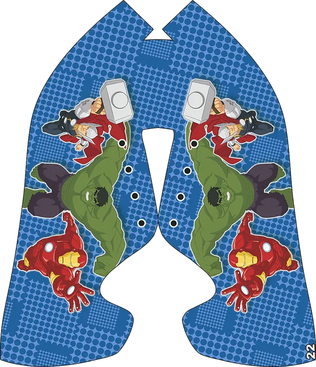
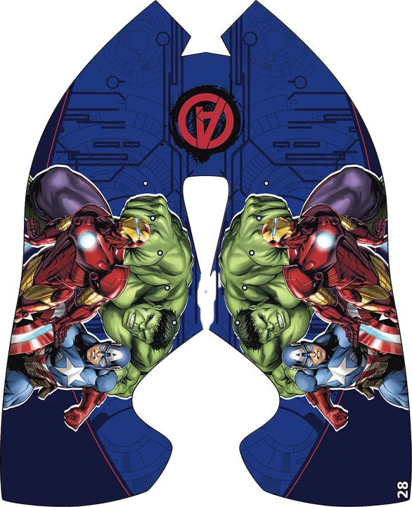
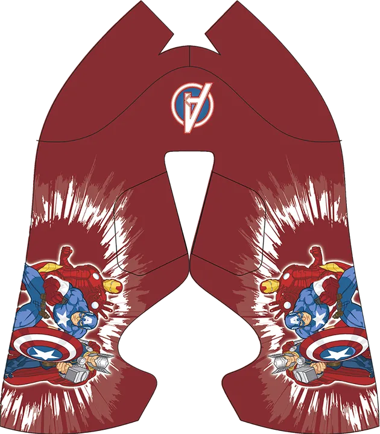
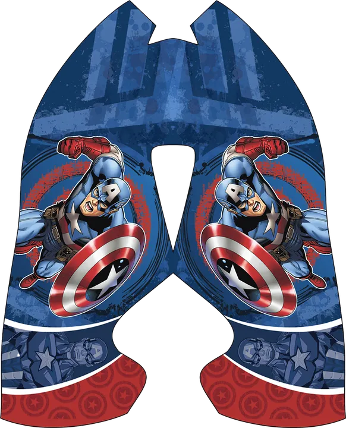
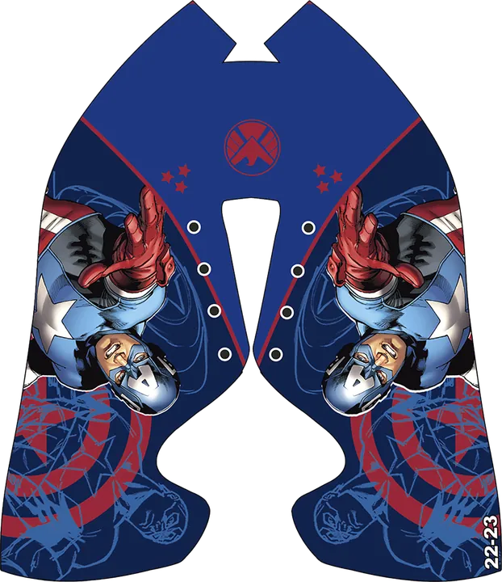
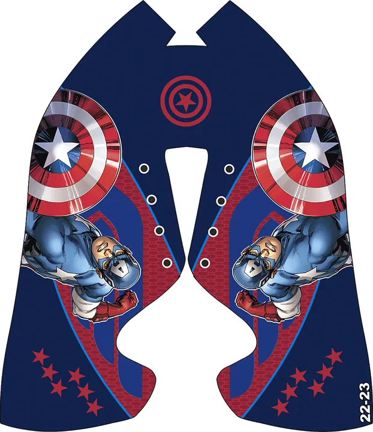
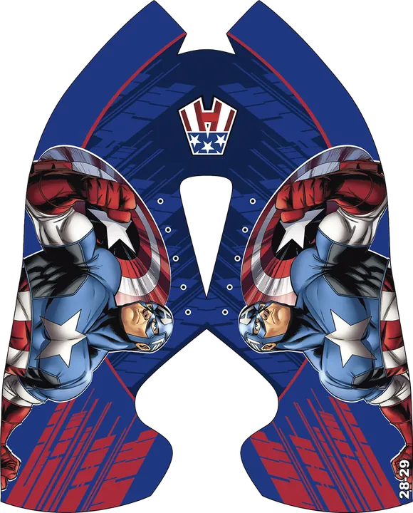
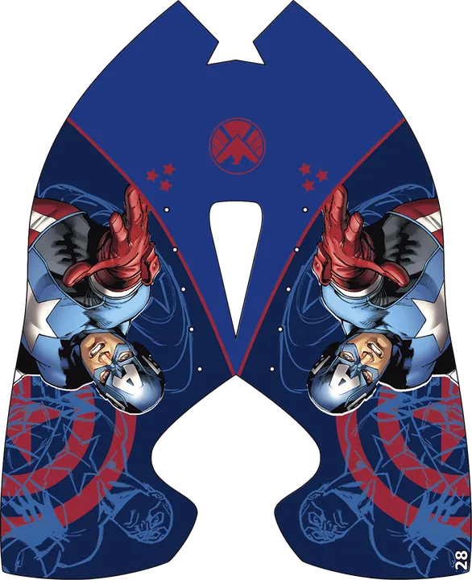
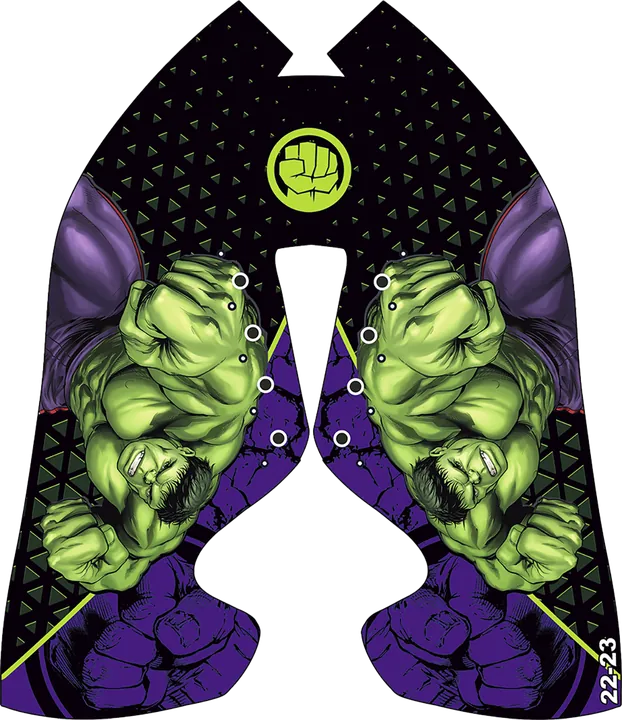
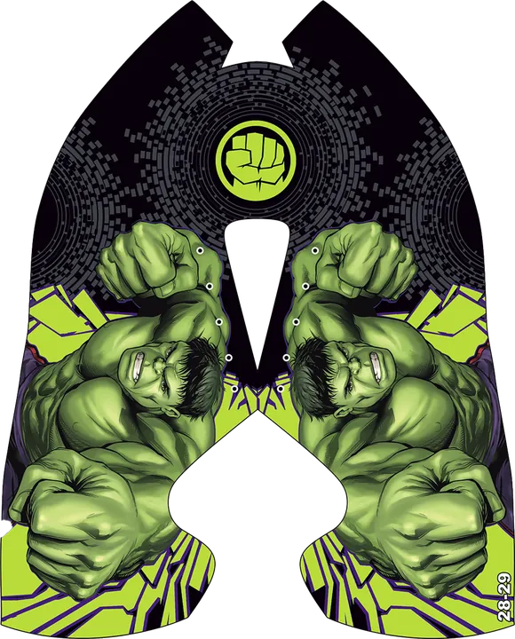
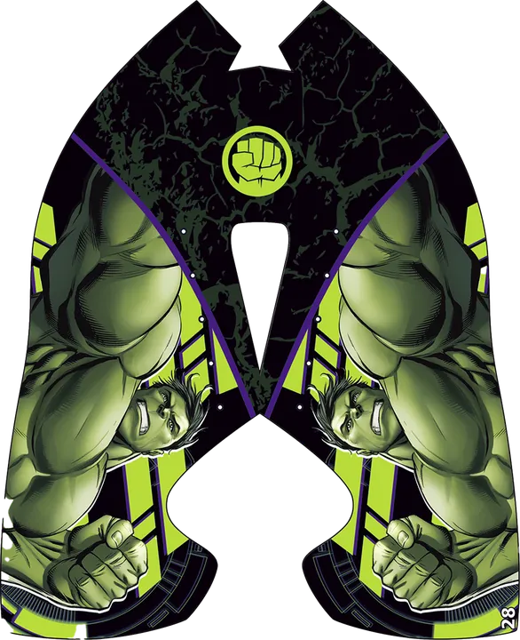
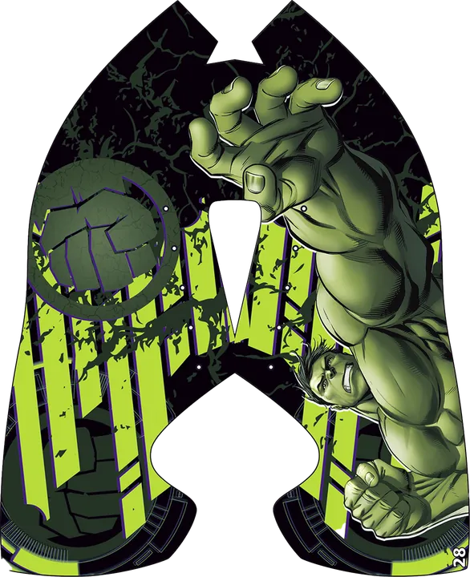
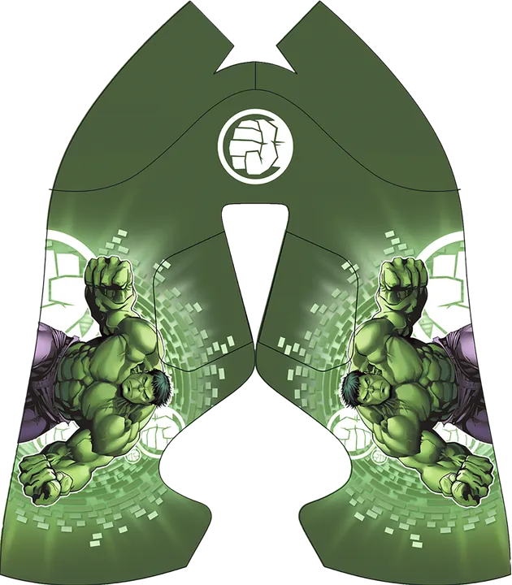
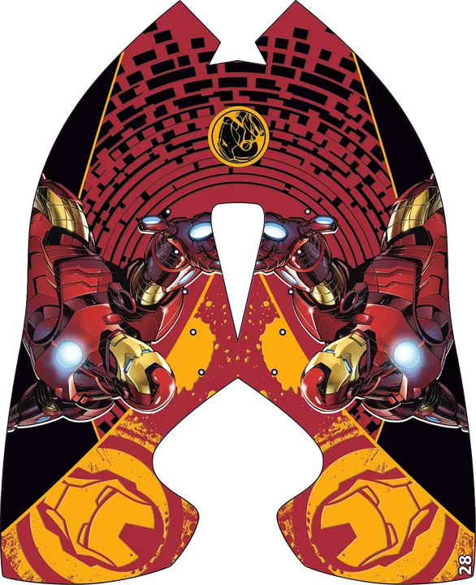
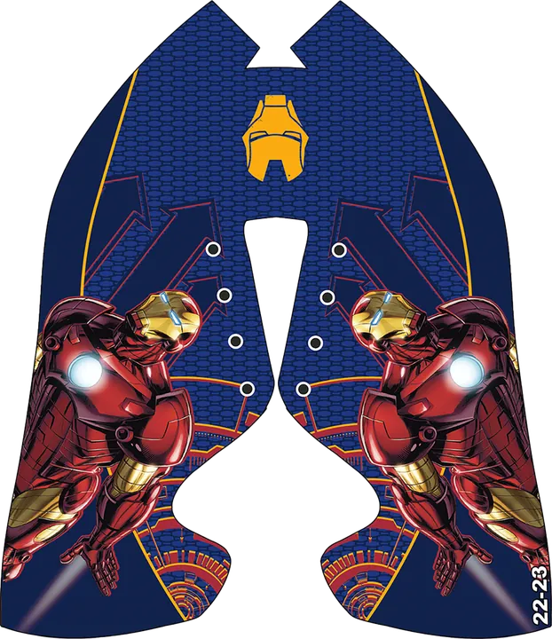
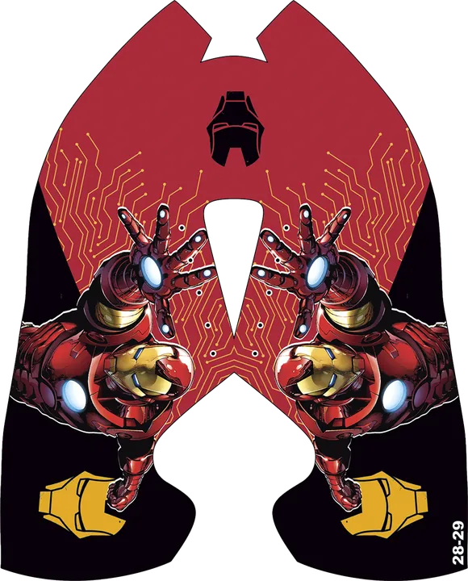
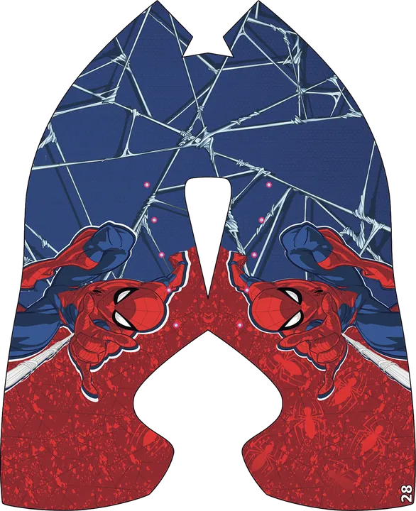
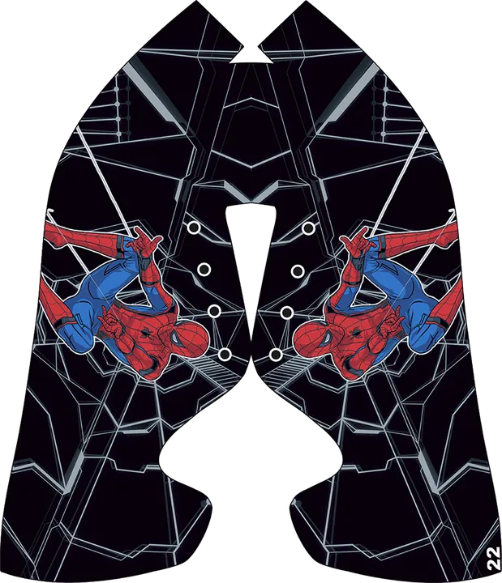
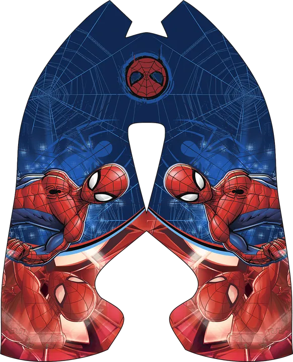
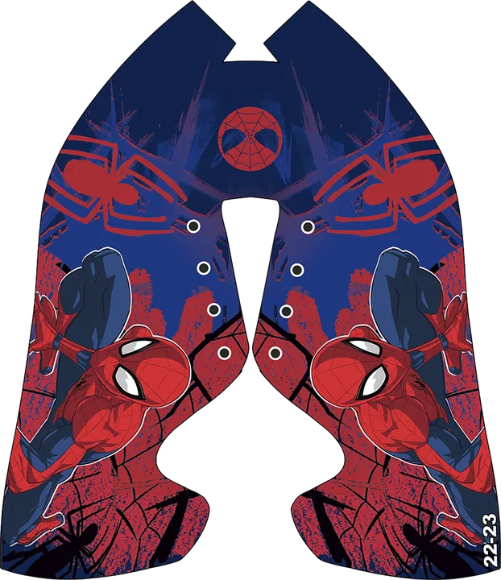
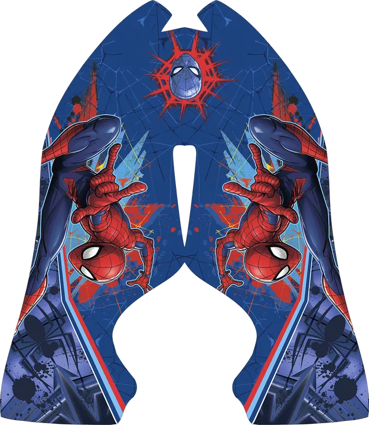
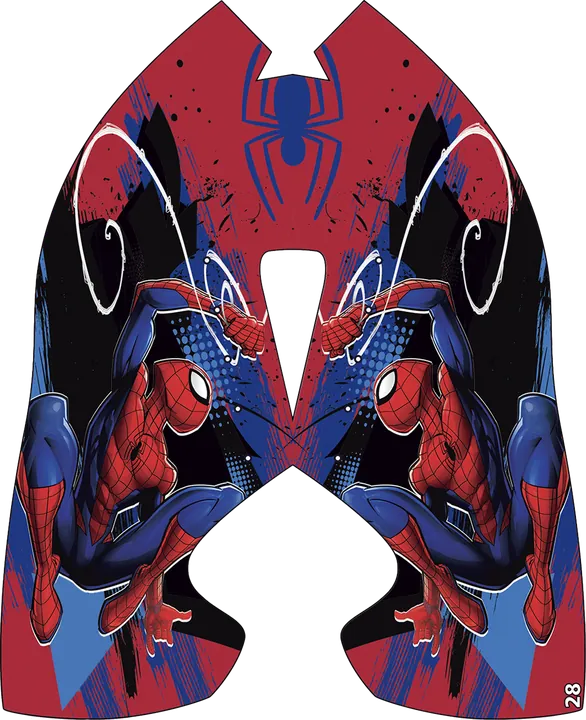


DC


Star Wars


My Little Pony
Tênis de nylon.